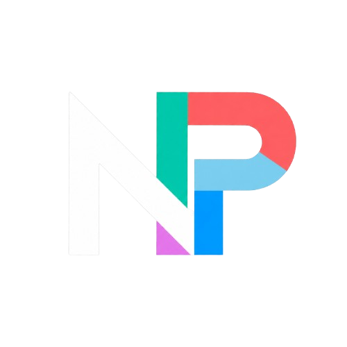

Systems
I enjoy understanding how servers, networks, and deployments work behind the scenes.

USC CS Student & Sysadmin Served from Ubuntu 24.04.4 LTS
SysAdmin & DevSecOps · Computer Science
Building resilient systems and clean software — from bare-metal servers to full-stack web. Currently studying at USC while keeping the infrastructure running and the servers humming.
About / Background
My name is Nathaniel Ryan Ponce, a Computer Science student at the University of San Carlos with a growing focus on system administration, DevSecOps, and some full-stack web development.
I like working close to the machine: Linux servers, deployment flows, web infrastructure, and the practical side of keeping things online. Alongside keeping services dependable, I am expanding my depth in cybersecurity to ensure the backend systems and network architectures I build are as fundamentally secure as they are stable.
This portfolio is both a personal website and a live project — a place where I can document what I build, what I learn, and how my technical style develops over time.
I enjoy understanding how servers, networks, and deployments work behind the scenes.
I build with HTML, CSS, JavaScript, and backend concepts while slowly expanding toward full-stack development.
I treat each project as a chance to improve my structure, design judgment, and problem-solving process.